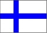

|
 |
 |
 |
 |
 |
 |
 |
 |  |
Suiça
Localizada na Europa central, a Suíça faz parte dos melhores países do mundo para viver pois está perto do topo quando se diz respeito à saúde, satisfação com a vida e empregos. O país apresenta uma economia estável e excelentes serviços públicos. A Suíça possui quatro idiomas oficiais (alemão, francês, italiano e reto-romano), e 5,5 milhões de seus habitantes são fluentes em inglês, o que pode ser uma ótima oportunidade para aprender novos idiomas. A Suíça foi muito bem classificada nos quesitos cidadania (3ª), como espaço aberto para negócios (3ª) e empreendedorismo (5ª) e pela sua qualidade de vida (6ª). Mas ficou abaixo nas categorias de patrimônio ("países que moldaram a história com sua cultura"), "motores" (economias emergentes) e aventura (20ª no ranking por ser um lugar "divertido, amigável e sexy")."Neutralidade, estabilidade e diplomacia"
A Suécia foi classificada como o melhor país para as mulheres, seguida por outros países escandinavos, Dinamarca e Noruega. A Holanda ficou em quarto e o Canadá em quinto nesse quesito. A Escandinávia também obteve melhores resultados quando as pessoas foram questionadas sobre o melhor país para criar filhos. A Suécia ficou em primeiro, seguida pela Dinamarca, Noruega, Finlândia e o Canadá.Curiosidades sobre este incrível país da Europa:
- A Suíça tem a segunda maior expectativa de vida do mundo: 83,4 anos. Só perde para o Japão!
- Os suíços têm mais armas por habitante do que os iraquianos. Mesmo assim, tem um número muito baixo de morte causada por tiro – metade que o dos Estados Unidos. De fato, o país tem uma das menores taxas de criminalidade entre todos os países desenvolvidos.
- O túnel mais longo do mundo tem 57 quilômetros de comprimento e vai da Suíça à Itália sob os Alpes. A sua construção levou 17 anos.
- Em 2017, a Suíça se tornou o primeiro país europeu a permitir a venda de alimentos à base de insetos para humanos.
- A Suíça é o maior exportador de chocolate do mundo: 18 de suas companhias produziram juntas 172.376 toneladas de chocolate em 2012. E a sua população come mais chocolate do qualquer outra também!
- A Suíça tem uma bandeira nacional quadrada. Só existem duas no mundo assim, a dela e a do Vaticano.
- A Suíça é um dos poucos países do mundo onde o suicídio assistido é legal, juntamente com Bélgica, Holanda e os estados de Oregon, Washington e Montana nos EUA.
- Os estrangeiros representam 23% da população suíça.
- A Suíça é um dos melhores lugares do mundo para ser professor. A média salarial em 2014 era de US$ 68.000 por ano.
- A Suíça tem quatro idiomas oficiais: francês, alemão, italiano e romanche
- A Suíça não tem um presidente fixo. O País tem um conselho formado por sete membros que se revezam a cada ano como presidente federal
- A Suíça tem uma “Festa Anti-Power Point” contra o software da Microsoft usado em apresentações profissionais.
- O famoso queijo suíço Gruyère tem 75 aromas alpinos diferentes, incluindo baunilha, orquídea, violeta, castanha, hortelã, madeira, avelã e grama fresca. Dois terços da produção do queijo são comidos pela própria população suíça.
- Na Suíça é comum fazer caminhadas nu ao ar livre. Várias áreas, inclusive, possuem seções de nudismo chamadas de “Cultura do Corpo Livre”.
- A empresa Rolex inventou o primeiro relógio à prova d’água na Suíça em 1927.
Fonte:Hotcouses
Copyright 2018 - by Gustavo Pereira 5141686